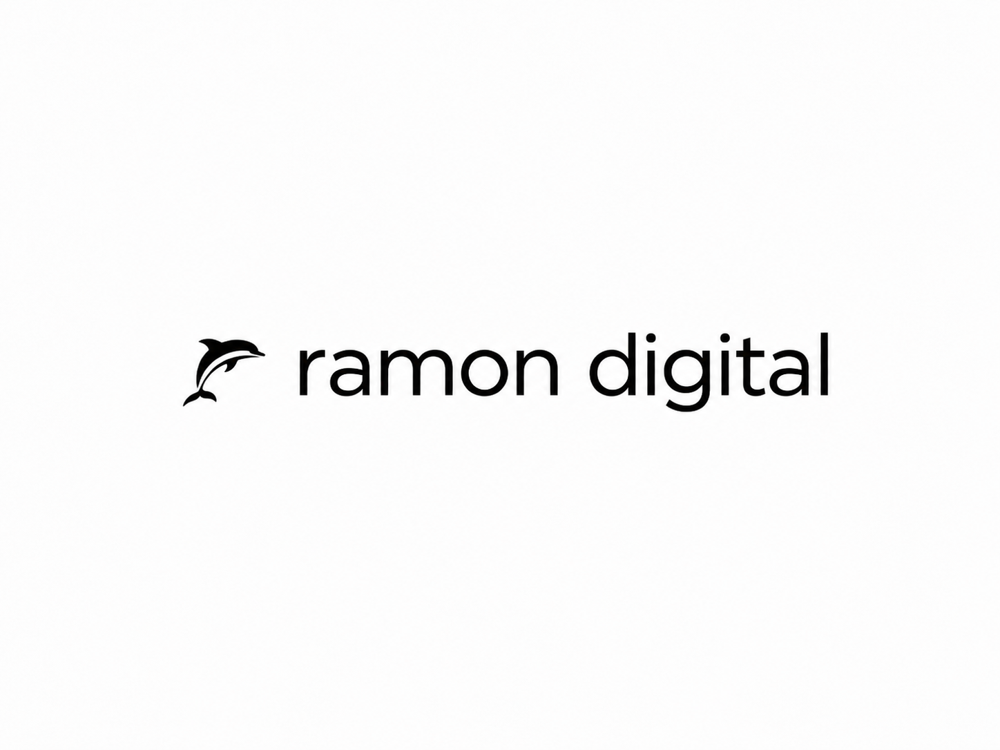

Websites
Een rustige structuur, sterke visuele richting en pagina’s die logisch voelen.

Plan gesprekIk ontwerp websites die helder vertellen wat je doet, gevonden kunnen worden en bezoekers zonder omweg richting contact brengen.
Geen losse pagina’s, geen vage marketinglaag. Ik kijk naar je aanbod, je zoekkansen en de route die iemand nodig heeft om vertrouwen te krijgen.
Een rustige structuur, sterke visuele richting en pagina’s die logisch voelen.
Een vindbaar fundament met pagina’s rond echte vragen en intenties.
Scherpe keuzes over inhoud, conversie, positionering en online groei.
Het proces blijft compact. Eerst bepalen we wat de website moet doen, daarna bouwen we de pagina’s rond bewijs, vindbaarheid en contact.
Doelgroep, aanbod, huidige site en de belangrijkste zoek- of contactkansen.
Een visuele richting die rustig is, professioneel voelt en het aanbod draagt.
Pagina’s aanscherpen op tekst, SEO, snelheid, vertrouwen en aanvragen.
Drie cases, klikbaar naar de volledige pagina. Hier staan de portfoliofoto’s bewust samen op één plek.

Dat betekent: geen overvolle pagina’s, geen vage marketingtaal en geen ontwerp dat alleen mooi wil zijn. Wel structuur, smaak, vindbaarheid en een duidelijke reden om contact op te nemen.
Vrijblijvend sparren over je website, SEO of positionering. Liever direct mailen? Stuur je vraag naar info@ramondigital.nl.